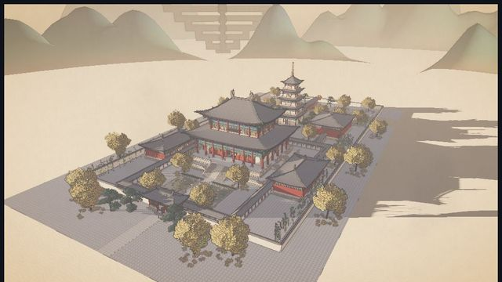
01院外东南上空远景重点0:00–0:16 16 秒
全院鸟瞰，交代布局和中轴线
这是木构博物馆，一座讲榫卯的线上展馆。它是一组两进的院落，中轴线贯穿南北：山门、主殿、后殿、木塔，最北是运河上的廊桥。
一条流线，一遍走完：视频里的每个镜头，都能在平面图上找到它的机位和朝向。
镜头顺序就是参观顺序：从南面山门进，沿中轴到主殿，出主殿向西顺时针绕一圈，最后回到山门。重点镜头给时间、给特写、把展品拆开讲；过场镜头只交代“走到哪了”。
| 段落 | 讲什么 | 镜头 | 时间 | 时长 | 重点镜头 |
|---|---|---|---|---|---|
| 开场 | 院外看全貌，从山门进院 | 镜 1–3 | 0:00–0:32 | 32 秒 | 镜 1 |
| 前院 | 沿中轴走向主殿，抬头看檐下斗拱 | 镜 4–6 | 0:32–1:09 | 37 秒 | 镜 5、镜 6 |
| 主殿 | 序厅烫样，中庭一组拆开的唐代斗拱 | 镜 7–10 | 1:09–1:50 | 41 秒 | 镜 8、镜 9 |
| 西配殿 | 展厅一、二：器物里的榫卯，圆点拆开局部 | 镜 11–15 | 1:50–2:50 | 59 秒 | 镜 12、镜 13、镜 14 |
| 后殿 | 展厅三：家具 | 镜 16–18 | 2:50–3:17 | 27 秒 | 镜 17 |
| 北院 | 木塔、展厅四的斗拱与屋架、塔内、廊桥 | 镜 19–26 | 3:17–4:30 | 74 秒 | 镜 19、镜 20、镜 22、镜 24 |
| 东侧回程 | 展厅五、工坊、尾厅 | 镜 27–29 | 4:30–5:03 | 32 秒 | — |
| 收尾 | 退到院外，回看整座院落 | 镜 30 | 5:03–5:13 | 10 秒 | 镜 30 |
圆圈里的数字是镜号，和下面分镜表、视频左上角的镜号一致。圆点是机位，扇形朝着镜头看的方向，箭头是镜头移动的方向和距离。
点图上的圆圈可以跳到对应的分镜。
视频右上角有一张同样的小地图，红点和扇形随镜头实时移动，播放到任何一帧都能对上这张平面图。

全院鸟瞰，交代布局和中轴线
这是木构博物馆，一座讲榫卯的线上展馆。它是一组两进的院落，中轴线贯穿南北：山门、主殿、后殿、木塔，最北是运河上的廊桥。
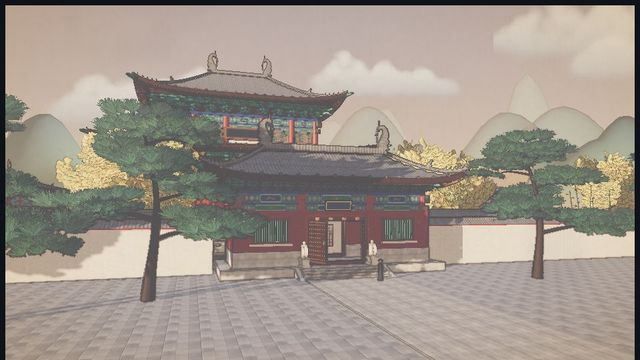
山门正面
参观从山门开始。山门三开间，两侧院墙围出一座完整的院落。
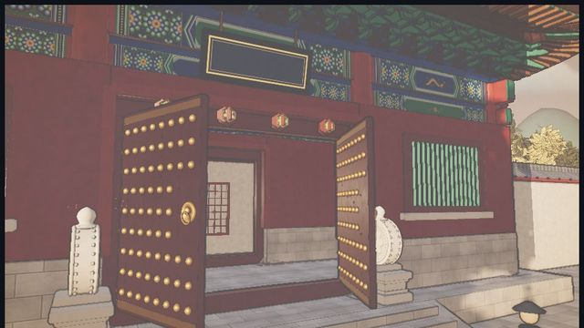
门钉、铺首、抱鼓石
板门上有门钉和铺首，门楣上有门簪，门前一对抱鼓石。
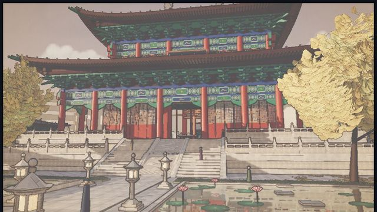
进门后主殿出现
绕过影壁就是前院。石道两侧各一方水池，东西回廊把院子连成一圈，尽头是主殿。
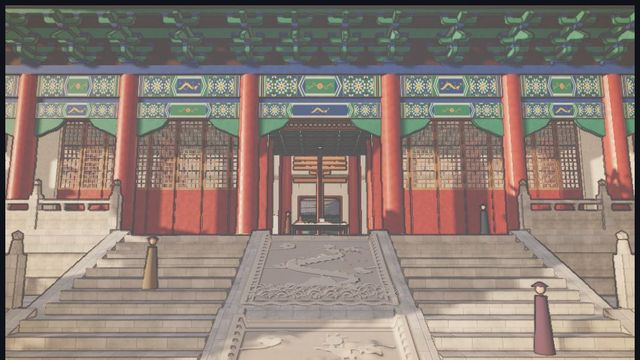
主殿正面，由台基摇到屋脊
主殿是重檐屋顶，坐在两层台基上，体量是两侧配殿的一倍半，是前院的中心。
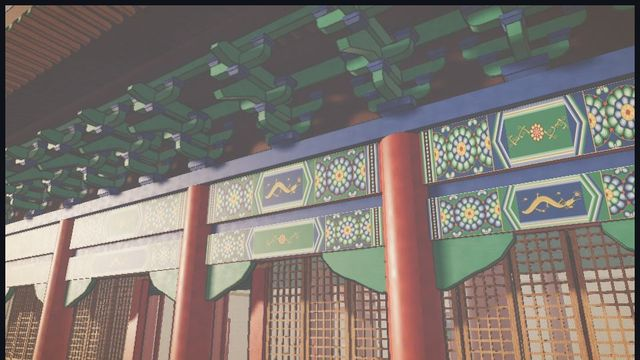
彩画、斗拱、椽子，沿檐口横移
抬头看檐下。额枋上是青绿相间的旋子彩画，往上是一攒一攒的斗拱，再往上是檐椽和飞椽。斗拱全靠榫卯层层咬合，没有一颗钉子。
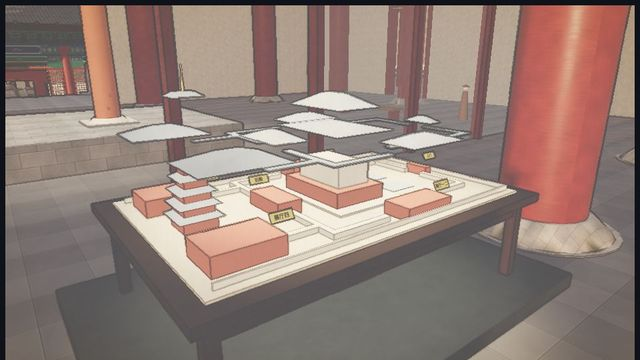
烫样
进主殿先到序厅。长案上是全馆的烫样，也就是古代做给人看的建筑模型，先在这里认一认路。
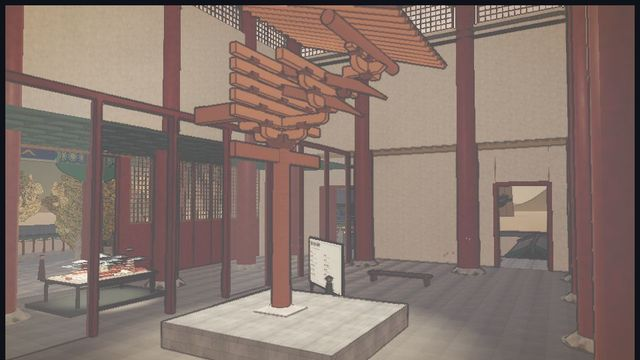
中庭全貌和原大斗拱
穿过屏风门是中庭，全馆最高的空间。一根五米高的柱子，顶着一朵原大的唐式斗拱。
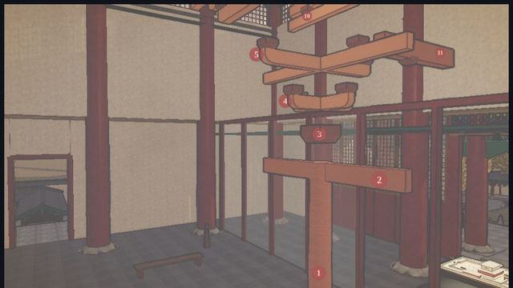
斗拱逐层拆解
点一下，它一层层拆开。每一件构件都靠榫头和卯眼相扣，层层出挑，把屋檐托出四米多。
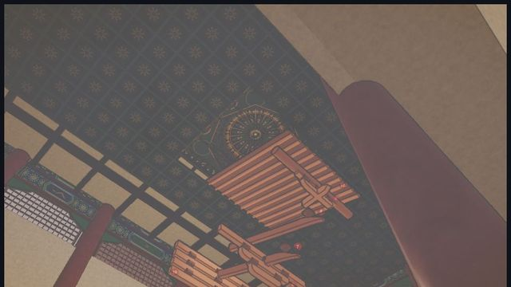
藻井
头顶是一口藻井，方井、八角井、圆井层层内收。
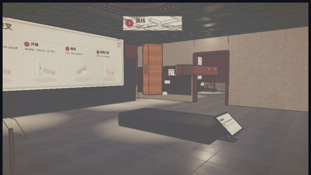
展厅一全貌
出主殿向西是展厅一，从最基本的讲起：一个节点是怎样做出来的。
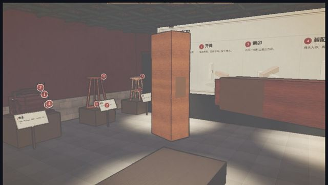
透榫加楔五步演示
这件放大的透榫，按画线、开榫、凿卯、装配、打楔五步，一遍遍把自己做出来。
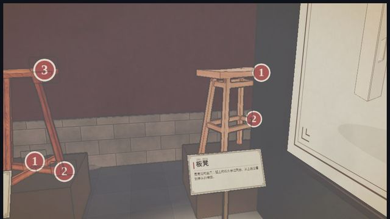
三件器物，圆点拆开局部
沿墙是三件器物：提盒、圆凳、板凳。每件身上有编号圆点，点一下，那一处的榫卯就单独退开。看板凳，腿顶的榫头穿过了凳面。
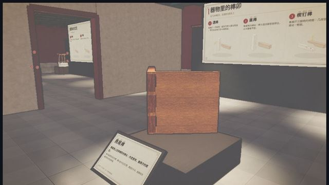
燕尾榫箱角开合
展厅二讲木料怎样接长、拼宽。这是放大的燕尾榫箱角：梯形榫头外宽里窄，越往外拉，卡得越紧。
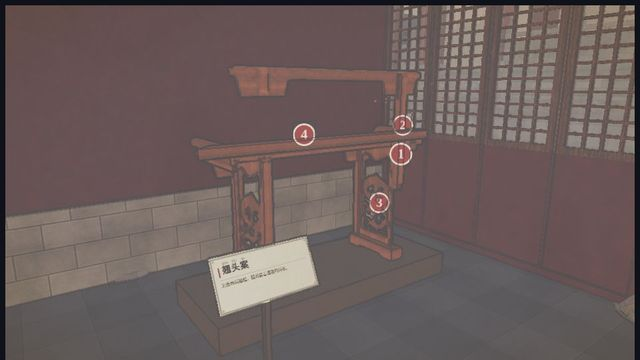
翘头案，夹头榫局部拆开
这边是博古架和翘头案。看翘头案的腿：腿顶开口，把牙条夹在当中，这叫夹头榫。
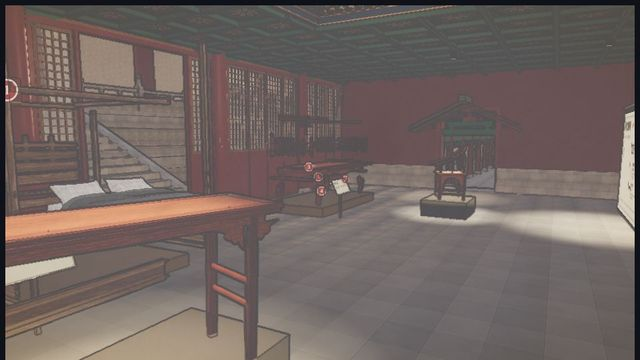
展厅三全貌
沿回廊向北到后殿，这里看榫卯做成的家具。
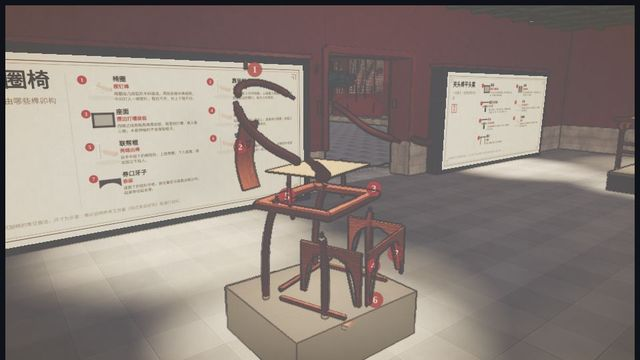
圈椅拆解
明式圈椅拆开来看：椅圈由几段弧料用楔钉榫接成，腿足、座面、靠背之间全是榫卯。
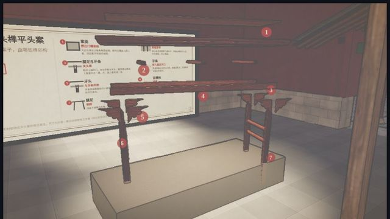
平头案拆解
旁边的平头案用夹头榫：腿足上端开口，夹住牙条，再托起案面。
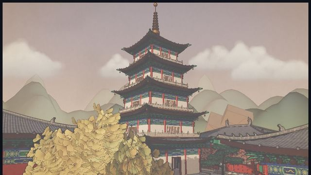
木塔全貌
穿过后殿是北院。正中是五层木塔，高四十六米，是全馆最高的建筑。
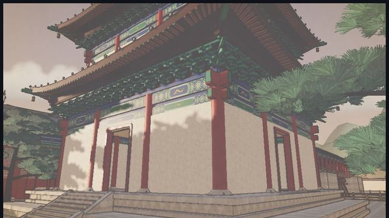
由下往上摇，逐层的檐和平座
塔身逐层收分，每层檐下都有斗拱，檐上是平座栏杆，最上面是塔刹。
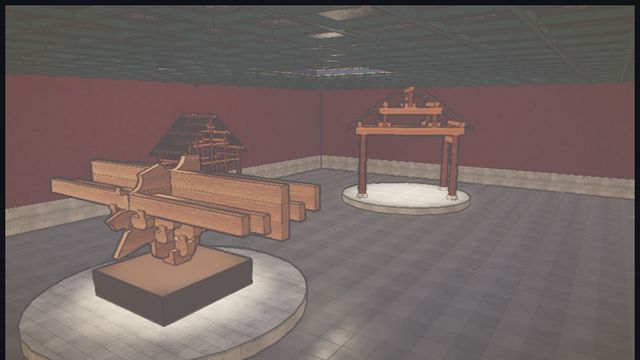
展厅四全貌
先进西厢的展厅四，看榫卯怎样从一个节点长成一座房屋。
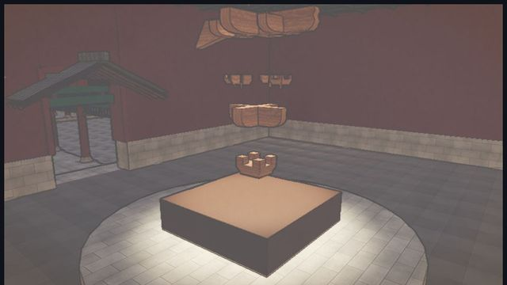
平身科斗拱拆解
这是一攒清式的平身科斗拱，拆开是几十个构件，一件压一件。
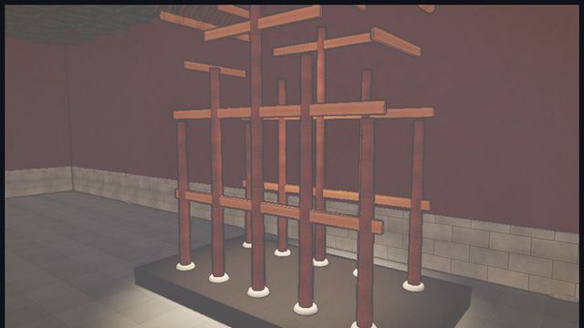
抬梁与穿斗屋架对照
旁边是抬梁和穿斗两种屋架：一个用梁层层抬起，一个用柱子直接承檩。
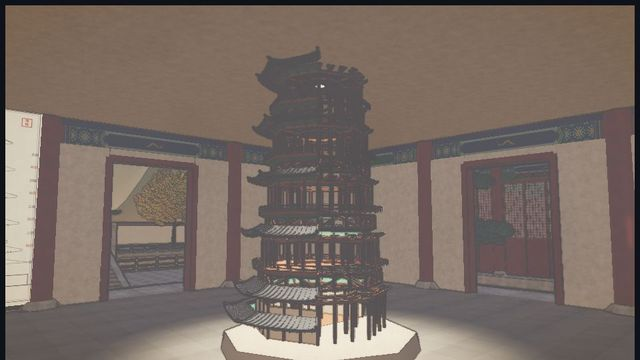
塔内的木塔剖面模型
再走进木塔。塔心是一具应县木塔的剖面模型：在一座木塔里，看另一座木塔是怎么搭起来的。
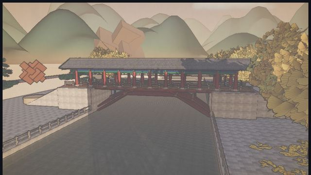
木拱廊桥侧面
从塔的北门出去是运河。桥身是编木拱，两组直木交织成拱，同样不用一颗钉子。
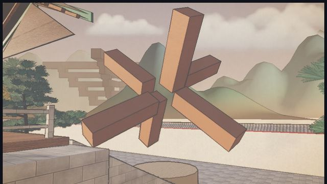
鲁班锁雕塑
过桥到北岸，是一件放大的鲁班锁。
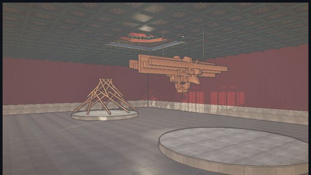
展厅五的三件装置
东厢的展厅五，把构件当作材料来创作：悬在半空的斗拱、互承木构、窗棂灯墙。
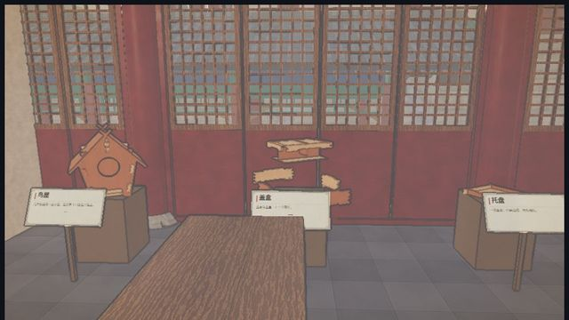
四件插接小件，拆开两件
工坊里是四件用薄板插接的小件：方盒、托盘、盖盒、鸟屋。拆开来，每一件都只是几片平板。
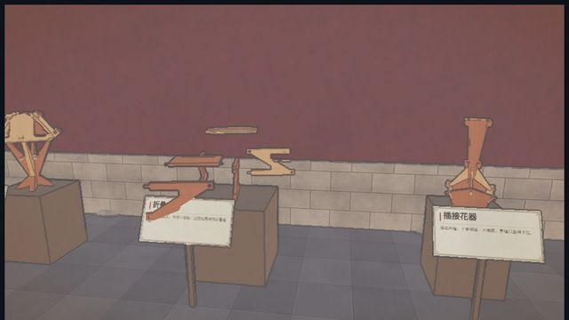
三件现代小件
尾厅留给今天的设计：插接的花器、折叠小凳和小架，用的还是同样的道理。
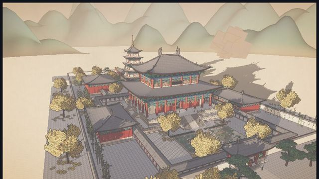
回望全院，收尾
走完一圈，回到山门。从一个节点，到一件家具，到一座房屋：这就是木构。